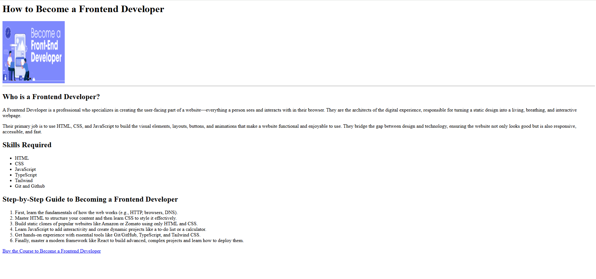

Lecture 2: What is HTML | Heading | Paragraph | Anchor tag | Image element
Lecture Video
My Key Takeaways
|
This lecture introduced the basic building blocks of HTML, which gives structure to a webpage.
|
The World's First Website |
Code Example from this Lecture
This example combines all the basic tags to create a structured, single-page document.
<h1>How to Become a Frontend Developer</h1>
<img
src="https://media.geeksforgeeks.org/wp-content/cdn-uploads/
20201111215809/How-to-Become-a-Front-End-Developer-in-2020.png"
height="200px" width="200px" alt="frontend developer person">
<hr />
<h2>Who is a Frontend Developer?</h2>
<p>A Frontend Developer is a professional who specializes in creating the user-facing part of a website—everything a person sees and interacts with in
their browser.They are the architects of the digital experience, responsible for turning a static design into a living, breathing, and interactive webpage.</p>
<p>Their primary job is to use HTML, CSS, and JavaScript to build the visual elements, layouts, buttons, and animations that make a website functional and
enjoyable to use. They bridge the gap between design and technology, ensuring the website
not only looks good but is also responsive, accessible, and fast.</p>
<h2>Skills Required</h2>
<ul>
<li>HTML</li>
<li>CSS</li>
<li>JavaScript</li>
<li>TypeScript</li>
<li>Tailwind</li>
<li>Git and Github</li>
</ul>
<h2>Step-by-Step Guide to Becoming a Frontend Developer</h2>
<ol>
<li>First, learn the fundamentals of how the web works (e.g., HTTP, browsers, DNS).</li>
<li>Master HTML to structure your content and then learn CSS to style it effectively.</li>
<li>Build static clones of popular websites like Amazon or Zomato using only HTML and CSS.</li>
<li>Learn JavaScript to add interactivity and create dynamic projects like a to-do list or a calculator.</li>
<li>Get hands-on experience with essential tools like Git/GitHub, TypeScript, and Tailwind CSS.</li>
<li>Finally, master a modern framework like React to build advanced, complex projects and learn how to deploy
them.</li>
</ol>
<a href="https://www.coderarmy.in/" target="_blank">Buy the Course to Become a Frontend Developer</a>
Output of the Above Code:
